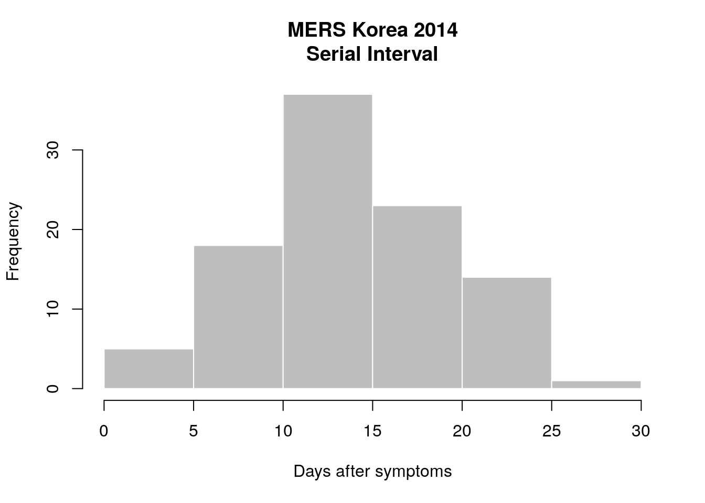

epicontacts: Manipulation, Visualisation and Analysis of Epidemiological Contact Dataepicontacts aims to facilitate manipulation, visualisation and analysis of epidemiological contact data. Such datasets inherently have network components, in which nodes are typically cases and reported contacts or exposures are (directed or undirected) edges. This package provides a convenient data structure as well as functionality specific to handle these data.
library(outbreaks)
library(epicontacts)epicontacts provides a convenient structure to store heterogeneous epidemiological contact network data (i.e. nodes and edges) in a single object. The epicontacts class must contain two components: a line list and a contact dataset.
Each row of the line list should represent unique observations of cases, and each row of the contact list should represent unique pairs of contacts. Each can include arbitrary features, but both datasets should share an identification scheme.
The example that follows will use the mers_korea_2015, which is a dataset (in list format) distributed in the outbreaks package.
str(mers_korea_2015)## List of 2
## $ linelist:'data.frame': 162 obs. of 15 variables:
## ..$ id : chr [1:162] "SK_1" "SK_2" "SK_3" "SK_4" ...
## ..$ age : int [1:162] 68 63 76 46 50 71 28 46 56 44 ...
## ..$ age_class : chr [1:162] "60-69" "60-69" "70-79" "40-49" ...
## ..$ sex : Factor w/ 2 levels "F","M": 2 1 2 1 2 2 1 1 2 2 ...
## ..$ place_infect : Factor w/ 2 levels "Middle East",..: 1 2 2 2 2 2 2 2 2 2 ...
## ..$ reporting_ctry: Factor w/ 2 levels "China","South Korea": 2 2 2 2 2 2 2 2 2 1 ...
## ..$ loc_hosp : Factor w/ 13 levels "365 Yeollin Clinic, Seoul",..: 10 10 10 10 1 10 10 13 10 10 ...
## ..$ dt_onset : Date[1:162], format: "2015-05-11" ...
## ..$ dt_report : Date[1:162], format: "2015-05-19" ...
## ..$ week_report : Factor w/ 5 levels "2014_21","2014_22",..: 1 1 1 2 2 2 2 2 2 2 ...
## ..$ dt_start_exp : Date[1:162], format: "2015-04-18" ...
## ..$ dt_end_exp : Date[1:162], format: "2015-05-04" ...
## ..$ dt_diag : Date[1:162], format: "2015-05-20" ...
## ..$ outcome : Factor w/ 2 levels "Alive","Dead": 1 1 2 1 1 2 1 1 1 1 ...
## ..$ dt_death : Date[1:162], format: NA ...
## $ contacts:'data.frame': 98 obs. of 4 variables:
## ..$ from : chr [1:98] "SK_14" "SK_14" "SK_14" "SK_14" ...
## ..$ to : chr [1:98] "SK_113" "SK_116" "SK_41" "SK_112" ...
## ..$ exposure : Factor w/ 5 levels "Contact with HCW",..: 2 2 2 2 2 2 2 2 2 2 ...
## ..$ diff_dt_onset: int [1:98] 10 13 14 14 15 15 15 16 16 16 ...What features are in the line list?
colnames((mers_korea_2015$linelist))## [1] "id" "age" "age_class" "sex"
## [5] "place_infect" "reporting_ctry" "loc_hosp" "dt_onset"
## [9] "dt_report" "week_report" "dt_start_exp" "dt_end_exp"
## [13] "dt_diag" "outcome" "dt_death"What about the contact dataset?
colnames((mers_korea_2015$contacts))## [1] "from" "to" "exposure" "diff_dt_onset"epicontacts ObjectIn order to create the epicontacts object, both the line list and contact data frames must be passed to make_epicontacts(). This function accommodates instances when the respective identifiers are not the first columns of these data frames (see the “id”, “from” and “to” arguments). make_epicontacts() can also account for contact networks that have a direction (see “directed” argument).
merskor15 <- make_epicontacts(linelist = mers_korea_2015$linelist,
contacts = mers_korea_2015$contacts,
directed = FALSE)
class(merskor15)## [1] "epicontacts"summary(merskor15)##
## /// Overview //
## // number of unique IDs in linelist: 162
## // number of unique IDs in contacts: 97
## // number of unique IDs in both: 97
## // number of contacts: 98
## // contacts with both cases in linelist: 100 %
##
## /// Degrees of the network //
## // in-degree summary:
## Min. 1st Qu. Median Mean 3rd Qu. Max.
## 1.000 1.000 1.000 2.021 1.000 39.000
##
## // out-degree summary:
## Min. 1st Qu. Median Mean 3rd Qu. Max.
## 1.000 1.000 1.000 2.021 1.000 39.000
##
## // in and out degree summary:
## Min. 1st Qu. Median Mean 3rd Qu. Max.
## 1.000 1.000 1.000 2.021 1.000 39.000
##
## /// Attributes //
## // attributes in linelist:
## age age_class sex place_infect reporting_ctry loc_hosp dt_onset dt_report week_report dt_start_exp dt_end_exp dt_diag outcome dt_death
##
## // attributes in contacts:
## exposure diff_dt_onsetThe summary() method above provided counts for the number unique cases in both the contact and line list. The get_id() function retrieves similar information but as vectors of identifiers. This can be parameterized as follows:
What are the first ten IDs in the contacts dataset?
contacts_ids <- get_id(merskor15, "contacts")
head(contacts_ids, n = 10)## [1] "SK_14" "SK_16" "SK_6" "SK_87" "SK_1" "SK_15" "SK_76"
## [8] "SK_11" "SK_12" "SK_118"How many IDs are common to both?
length(get_id(merskor15, "common"))## [1] 97The subset() method for epicontacts objects allows for, among other things, pruning of networks based on values of node and edge attributes. These values must be passed as named lists to the respective argument.
subset(merskor15, node.attribute = list("outcome" = "Dead", "sex" = "M"),
edge.attribute = list("exposure" = "Emergency room"))##
## /// Epidemiological Contacts //
##
## // class: epicontacts
## // 14 cases in linelist; 33 contacts; non directed
##
## // linelist
##
## # A tibble: 14 × 15
## id age age_class sex place_infect reporting_ctry
## <chr> <int> <chr> <fctr> <fctr> <fctr>
## 1 SK_3 76 70-79 M Outside Middle East South Korea
## 2 SK_6 71 70-79 M Outside Middle East South Korea
## 3 SK_23 73 70-79 M Outside Middle East South Korea
## 4 SK_24 78 70-79 M Outside Middle East South Korea
## 5 SK_28 58 50-59 M Outside Middle East South Korea
## 6 SK_36 82 80-89 M Outside Middle East South Korea
## 7 SK_38 49 40-49 M Outside Middle East South Korea
## 8 SK_64 75 70-79 M Outside Middle East South Korea
## 9 SK_81 62 60-69 M Outside Middle East South Korea
## 10 SK_83 65 60-69 M Outside Middle East South Korea
## 11 SK_84 80 80-89 M Outside Middle East South Korea
## 12 SK_90 62 60-69 M Outside Middle East South Korea
## 13 SK_98 58 50-59 M Outside Middle East South Korea
## 14 SK_123 65 60-69 M Outside Middle East South Korea
## # ... with 9 more variables: loc_hosp <fctr>, dt_onset <date>,
## # dt_report <date>, week_report <fctr>, dt_start_exp <date>,
## # dt_end_exp <date>, dt_diag <date>, outcome <fctr>, dt_death <date>
##
## // contacts
##
## # A tibble: 33 × 4
## from to exposure diff_dt_onset
## <chr> <chr> <fctr> <int>
## 1 SK_14 SK_113 Emergency room 10
## 2 SK_14 SK_116 Emergency room 13
## 3 SK_14 SK_41 Emergency room 14
## 4 SK_14 SK_112 Emergency room 14
## 5 SK_14 SK_100 Emergency room 15
## 6 SK_14 SK_114 Emergency room 15
## 7 SK_14 SK_136 Emergency room 15
## 8 SK_14 SK_47 Emergency room 16
## 9 SK_14 SK_110 Emergency room 16
## 10 SK_14 SK_122 Emergency room 16
## # ... with 23 more rowsIn addition to subsetting by node and edge attributes, networks can be pruned to only include components that are connected to certain nodes. The “id” argument takes a vector of nodes and returns the line list of individuals that “touch” those IDs.
nodes <- c("SK_14","SK_145")
subset(merskor15, cluster_id = nodes)##
## /// Epidemiological Contacts //
##
## // class: epicontacts
## // 97 cases in linelist; 98 contacts; non directed
##
## // linelist
##
## # A tibble: 97 × 15
## id age age_class sex place_infect reporting_ctry
## <chr> <int> <chr> <fctr> <fctr> <fctr>
## 1 SK_1 68 60-69 M Middle East South Korea
## 2 SK_2 63 60-69 F Outside Middle East South Korea
## 3 SK_3 76 70-79 M Outside Middle East South Korea
## 4 SK_4 46 40-49 F Outside Middle East South Korea
## 5 SK_5 50 50-59 M Outside Middle East South Korea
## 6 SK_6 71 70-79 M Outside Middle East South Korea
## 7 SK_7 28 20-29 F Outside Middle East South Korea
## 8 SK_8 46 40-49 F Outside Middle East South Korea
## 9 SK_10 44 40-49 M Outside Middle East China
## 10 SK_11 79 70-79 F Outside Middle East South Korea
## # ... with 87 more rows, and 9 more variables: loc_hosp <fctr>,
## # dt_onset <date>, dt_report <date>, week_report <fctr>,
## # dt_start_exp <date>, dt_end_exp <date>, dt_diag <date>,
## # outcome <fctr>, dt_death <date>
##
## // contacts
##
## # A tibble: 98 × 4
## from to exposure diff_dt_onset
## <chr> <chr> <fctr> <int>
## 1 SK_14 SK_113 Emergency room 10
## 2 SK_14 SK_116 Emergency room 13
## 3 SK_14 SK_41 Emergency room 14
## 4 SK_14 SK_112 Emergency room 14
## 5 SK_14 SK_100 Emergency room 15
## 6 SK_14 SK_114 Emergency room 15
## 7 SK_14 SK_136 Emergency room 15
## 8 SK_14 SK_47 Emergency room 16
## 9 SK_14 SK_110 Emergency room 16
## 10 SK_14 SK_122 Emergency room 16
## # ... with 88 more rowsThe subset() method for epicontacts objects also accepts cluster size parameters (see “cs”, “cs_min” and “cs_max” arguments).
subset(merskor15, cs = 3)##
## /// Epidemiological Contacts //
##
## // class: epicontacts
## // 3 cases in linelist; 2 contacts; non directed
##
## // linelist
##
## # A tibble: 3 × 15
## id age age_class sex place_infect reporting_ctry
## <chr> <int> <chr> <fctr> <fctr> <fctr>
## 1 SK_76 75 70-79 F Outside Middle East South Korea
## 2 SK_145 37 30-39 M Outside Middle East South Korea
## 3 SK_150 44 40-49 M Outside Middle East South Korea
## # ... with 9 more variables: loc_hosp <fctr>, dt_onset <date>,
## # dt_report <date>, week_report <fctr>, dt_start_exp <date>,
## # dt_end_exp <date>, dt_diag <date>, outcome <fctr>, dt_death <date>
##
## // contacts
##
## # A tibble: 2 × 4
## from to exposure diff_dt_onset
## <chr> <chr> <fctr> <int>
## 1 SK_76 SK_145 Contact with HCW 5
## 2 SK_76 SK_150 Hospital room 6subset(merskor15, cs_min = 10, cs_max = 100)##
## /// Epidemiological Contacts //
##
## // class: epicontacts
## // 94 cases in linelist; 96 contacts; non directed
##
## // linelist
##
## # A tibble: 94 × 15
## id age age_class sex place_infect reporting_ctry
## <chr> <int> <chr> <fctr> <fctr> <fctr>
## 1 SK_1 68 60-69 M Middle East South Korea
## 2 SK_2 63 60-69 F Outside Middle East South Korea
## 3 SK_3 76 70-79 M Outside Middle East South Korea
## 4 SK_4 46 40-49 F Outside Middle East South Korea
## 5 SK_5 50 50-59 M Outside Middle East South Korea
## 6 SK_6 71 70-79 M Outside Middle East South Korea
## 7 SK_7 28 20-29 F Outside Middle East South Korea
## 8 SK_8 46 40-49 F Outside Middle East South Korea
## 9 SK_10 44 40-49 M Outside Middle East China
## 10 SK_11 79 70-79 F Outside Middle East South Korea
## # ... with 84 more rows, and 9 more variables: loc_hosp <fctr>,
## # dt_onset <date>, dt_report <date>, week_report <fctr>,
## # dt_start_exp <date>, dt_end_exp <date>, dt_diag <date>,
## # outcome <fctr>, dt_death <date>
##
## // contacts
##
## # A tibble: 96 × 4
## from to exposure diff_dt_onset
## <chr> <chr> <fctr> <int>
## 1 SK_14 SK_113 Emergency room 10
## 2 SK_14 SK_116 Emergency room 13
## 3 SK_14 SK_41 Emergency room 14
## 4 SK_14 SK_112 Emergency room 14
## 5 SK_14 SK_100 Emergency room 15
## 6 SK_14 SK_114 Emergency room 15
## 7 SK_14 SK_136 Emergency room 15
## 8 SK_14 SK_47 Emergency room 16
## 9 SK_14 SK_110 Emergency room 16
## 10 SK_14 SK_122 Emergency room 16
## # ... with 86 more rowsOne of the main features of epicontacts is its visualisation capabilities. As a default, the package uses interactive plotting based on the visNetwork package1. This interactivity is particularly useful for visualising large datasets.
plot(merskor15) The above is a generic method based on the vis_epicontacts() and accepts a number of arguments to customize the plot appearance and functionality. For a full list of options use ?vis_epicontacts()
epicontacts loads the threejs package to enable 3D visualisation tools with the graph3D() function2.
graph3D(merskor15, group = "sex", g_title = "MERS Korea 2014")To interact with the plot:
The get_pairwise() function allows processing of variable(s) in the line list according to each pair in the contact dataset. For the following example, date of onset of disease is extracted from the line list in order to compute the difference between disease date of onset for each pair. The value that is produced from this comparison represents the serial interval (si).
si <- get_pairwise(merskor15, "dt_onset")
summary(si)## Min. 1st Qu. Median Mean 3rd Qu. Max.
## 2.00 11.00 14.00 14.47 18.00 27.00hist(si, col="grey", border="white", xlab="Days after symptoms",
main="MERS Korea 2014\nSerial Interval")
The get_pairwise() will interpret the class of the column being used for comparison, and will adjust its method of comparing the values accordingly. For numbers and dates (like the si example above), the function will subtract the values. When applied to columns that are characters or categorical, get_pairwise() will paste values together. Because the function also allows for arbitrary processing (see “f” argument), these discrete combinations can be easily tabulated and analyzed.
head(get_pairwise(merskor15, "sex"), n = 10)## [1] "M - M" "M - F" "M - F" "M - M" "M - F" "M - M" "M - M" "M - F"
## [9] "M - F" "M - F"get_pairwise(merskor15, "sex", f=table)## values.to
## values.from F M
## F 2 4
## M 38 54fisher.test(get_pairwise(merskor15, "sex", f=table)) ##
## Fisher's Exact Test for Count Data
##
## data: get_pairwise(merskor15, "sex", f = table)
## p-value = 1
## alternative hypothesis: true odds ratio is not equal to 1
## 95 percent confidence interval:
## 0.06158088 5.26628732
## sample estimates:
## odds ratio
## 0.712926The get_clusters() function returns an augmented epicontacts object that includes two extra features in the line list: cluster_member and cluster_size. In this context, a ‘cluster’ corresponds to groups of connected individuals or components.
names(get_clusters(merskor15)$linelist)## [1] "id" "age" "age_class" "sex"
## [5] "place_infect" "reporting_ctry" "loc_hosp" "dt_onset"
## [9] "dt_report" "week_report" "dt_start_exp" "dt_end_exp"
## [13] "dt_diag" "outcome" "dt_death" "cluster_member"
## [17] "cluster_size"The degree of a node corresponds to its number of edges or connections to other nodes. get_degree() provides an easy method for calculating this value for epicontacts networks. A high degree in this context indicates an individual who was in contact with many others.
nb use of “type” argument depends on whether or not the network is directed.
deg_both <- get_degree(merskor15, "both", only_linelist = TRUE)Which individuals have the ten most contacts?
head(sort(deg_both, decreasing = TRUE), 10)## SK_14 SK_1 SK_16 SK_15 SK_6 SK_39 SK_11 SK_12 SK_76 SK_87
## 39 26 22 5 3 3 2 2 2 2What is the mean number of contacts?
mean(deg_both)## [1] 1.209877